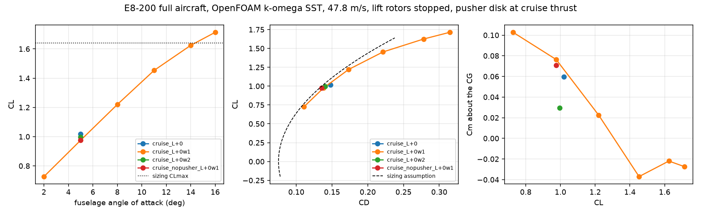
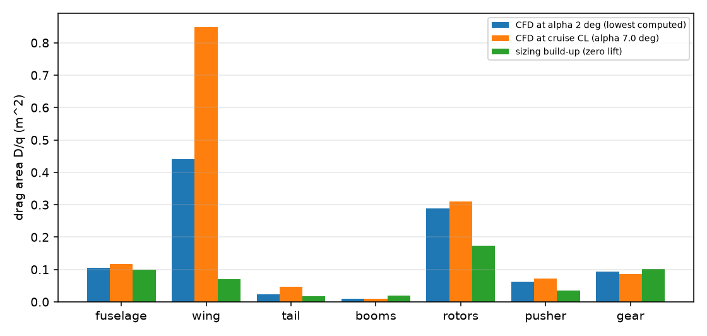
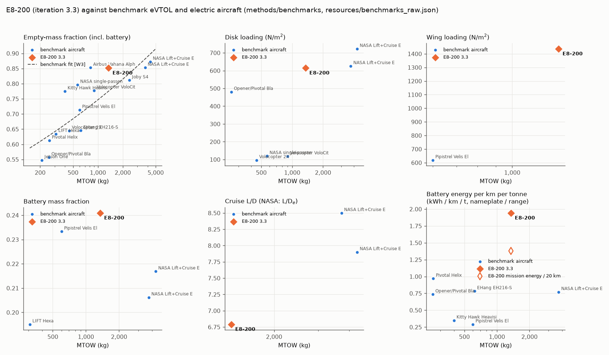

Frozen design: iteration 3.3
A crewed electric VTOL for 200 kg of payload over 20 km, sized for the lowest cost and complexity and for a shop with a 3-axis CNC mill and FDM printers. Every number on this page comes from files in the repository; the links point to them.
Configuration
| Item | Selection |
|---|---|
| Lift | 8 x 1.85 m E-PROPS 2-blade fixed pitch at 183 m/s tip speed; EMRAX 268 MV liquid-cooled motors; MGM HBCi 400800 inverters; flight-controller rpm cap 2,460 rpm |
| Cruise thrust | 2 x REB 90 on the boom tails with 1.75 m E-PROPS, 2,074 rpm, pitch 21.0° at 0.75 R |
| Wing | 8.0 x 1.15 m (9.2 m²), LS(1)-0417, ailerons only, leading edge 2.145 m from the nose |
| Tail | H-tail on the booms, 1.11 m² horizontal, 0.62 m² of fins |
| Battery | Molicel P50B, 175s5p x 4 packs (3,500 cells) along the cabin floor |
| Safety | Galaxy GRS 6 1200-1390 parachute; continued hover with one motor out; operation with one pack out |
| Structure | carbon tube booms and spars, laminated shells laid up in printed moulds, machined aluminium fittings |
Binding constraints
| Constraint | Margin | Notes |
|---|---|---|
| Lift-motor continuous torque, hover at 1,000 m ISA+15 | 1.6 % | EMRAX 268 continuous rating (liquid-cooled) |
| Cruise speed over 1.15 Vs | 1.1 % | on CLmax 1.628 (CFD 1.714 minus 5 %) |
| Pusher continuous power (10 % margin rule) | 2.7 % | 53.1 kW shaft each, against the 60 kW REB 90 rating |
| Parachute weight rating | 2.9 % | 1,348 kg against 1,390 kg |
| One-pack-out cell current / bus voltage | 57.3 A / 411 V | limits 60 A and 400 V at end of life |
Aerodynamics (CFD)
OpenFOAM v2412, steady RANS, 1.9 million cells, with the pushers modelled as actuator disks. Full results.
| Quantity | Sizing (before) | CFD | Used now |
|---|---|---|---|
| CD0 including pods | 0.0751 | 0.0764 | 0.0764 |
| Oswald e | 0.756 | 0.658 | 0.658 |
| Clean CLmax | 1.64 | ≥ 1.71 | 1.628 (CFD minus 5 %) |
| Static margin | 0.098 | 0.195 | 0.098 kept: the CFD Cm level does not converge on the mesh (independent check 0.101) |
| Pusher thrust deduction / wake fraction | 4.5 % / – | 1.9 % / 0.045 | CFD values |
| Hover download | 3.3 % | 2.0 % | 2.0 % |
| Grid convergence (GCI on CD, production mesh) | – | 2.8 % |
The CFD lift-dependent drag was 15 % higher than the build-up estimate. That left the pushers 0.8 % inside their rating at 172 km/h, so cruise was moved to 167 km/h. No hardware changed.


Structures (FEA)
Beam model of the airframe plus solid CalculiX models of every machined fitting, built from the CAD. Margins are at ultimate load (limit x 1.5, fittings x 1.15 on top), with B-basis, environmental and process knockdowns in the composite allowables. Full results.
| Item | Margin of safety |
|---|---|
| Booms (all rotors at 4,267 N, 1.25 x torque) | +0.094 |
| Main spar / tail spar / rear spar | +0.10 / +0.10 / +0.11 |
| Wing rear-spar fitting W-FIT-RS | +0.14 |
| Pylon PY-C | +0.17 |
| Parachute riser fitting CH-ATT-R | +0.24 |
| Parachute cradle CH-CRADLE | +0.32 |
| Landing-gear leg LG-LEG | +0.32 |
| Wing main-spar fitting W-FIT-MS | +0.33 |
| Flutter speed margin | +1.25 |
Open: the pusher 1P (34.6 Hz) sits near the boom modes (35.5–37.6 Hz). A ground vibration test and notch filtering are required before flight.
Requirements relaxed
The owner asked for the cheapest design that is still reliable. These rules were relaxed; the reliability core was kept.
| Rule | Was | Now |
|---|---|---|
| One-motor-out landing flare | 1.2 g | 1.1 g |
| Cruise speed margin over stall | 1.3 Vs | 1.15 Vs |
| Ground footprint | 9.0 m | 10.5 m |
| Minimum cruise speed | 135 km/h | 120 km/h |
Kept:
- ultimate factor 1.5;
- continued hover with one motor out and a 10 % control margin;
- cell current and bus voltage limits with one pack out at end of life;
- 10 % pusher power margin and 1 m/s climb;
- 1,000 m ISA+15 hover ceiling;
- 20 % reserve;
- parachute.
Iteration history
| Iteration | MTOW kg | Range km | kUSD at N = 10 | Key change |
|---|---|---|---|---|
| 1 | 1,002 | 50 | 387 | first closure |
| 2 | 1,090 | 20 | – | range 20 km, CAD/FEA mass calibration |
| 3 | 1,043 | 20 | 392 | cost-down |
| 3.1 | 1,078 | 20 | 431 | one-pack-out battery sag, pusher margin |
| 3.2 | 1,170 | 20 | 442 | CFD aero, relaxed rules, twin REB 60 pushers |
| 3.3 | 1,348 | 20 (24.1) | 498 | exact sag, CAD masses, motors with published ratings, CFD-calibrated cruise |
Verification and validation
Each discipline keeps its own verification under validation/<discipline>/. Separately, an independent check
re-derives the design from first principles (check_final.py).
The full matrix, with a source link on every row, is in validation/README.md.
| Check | Design | Independent |
|---|---|---|
| Range with 20 % reserve at end of life | 24.1 km | 25.3 km |
| Range at the unfavourable CFD band edge, 167 km/h | – | 20.9 km |
| Pusher continuous margin | +2.7 % | +4.4 % |
| Climb rate | 1.55 m/s | 1.66 m/s |
| One-pack-out cell current | 57.3 A | 55.2 A |
| Static margin | 0.098 | 0.101 |
| MTOW, CAD against sizing | 1,347.8 kg | −1.3 % |

Open items before building
- Motor quotes:
- EMRAX 268 winding for the 525–756 V bus (MV needs an inverter speed limit; the series is being superseded);
- EMRAX axial-load limit;
- REB 90 continuous torque near 2,000 rpm.
- EMRAX time limit above its continuous torque: one-motor-out hover needs about 290 N·m, and the datasheet peak is rated for 30 s.
- Ground vibration test and notch filtering of the pusher speed command.
- Range at the unfavourable end of the CFD bands: 19.0 km in the CFD check at 172 km/h, 20.9 km in the independent check at 167 km/h.
- Manufacturing:
- CH-CRADLE and PB-PLUG need two set-ups on the 150 mm mill;
- HT-SPAR needs a bonded splice sleeve;
- 106 part pairs could not be interference-checked.
- About two-thirds of the BOM value is estimates or pending quotes.